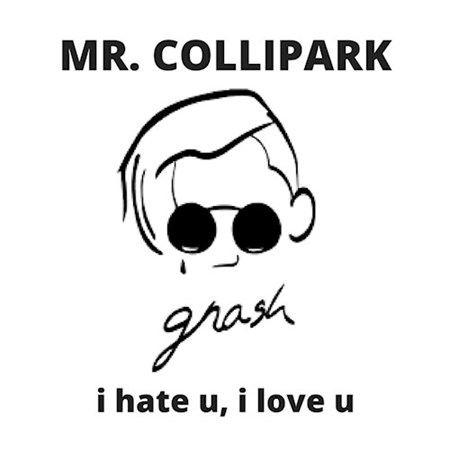

A querida bad bateu não se preocupa estou aqui pra ajudar!
E aí, galera? Aqui é a Crise dos Quinze e vim falar sobre algo que sempre me dá uma mão naqueles momentos em que me sinto meio pra baixo: música. É inevitável. Algumas canções têm o poder de nos acalmar, não é mesmo?! Seja pela melodia ou pela letra, sempre haverá aquelas que guardamos lá no fundo do coração, para os momentos de solidão. Se você, assim como eu, anda precisando da ajudinha de algumas letras para dar um up, separei uma playlist especial. São músicas que sempre escuto e que sempre me ajudam. Mas, cuidado: você pode ficar com vontade de chorar em algumas. Nada mais natural. Afinal, curtir a fossa também é importante!
#1: I’m a Mess – Ed Sheeran
Preciso mesmo comentar?! Se você me acompanha no instagram (@itsjustleticia), vai saber que esse ruivinho está na minha lista de ouro de artistas favoritos… Com melodia e letras viciantes, você facilmente se esquecerá do mundo e seus problemas!
#2: If You Don’t Know – 5 Seconds of Summer
Já que citei uma das minhas bandas favoritas, então nada mais justo do que seguir com a outra: 5SOS. Você já teve aquele “ciúmes” de uma música por ela ser tão especial pra você?! É o que eu sinto com essa que, sem dúvidas, é a minha favorita da banda e nunca falha em me acalmar completamente.
#3: Lay Me Down – Sam Smith
Moça, tem um olho na sua lágrima! Uma das mais emocionantes do rei das bads!
#4: Elastic Heart – Sia
Letra maravilhosa, melodia eletrizante e cantora excepcional! Sia serve para qualquer humor, honestamente.
#5. Let Her Go – Passenger
Acho que a maioria conhece e já se emocionou alguma vez com essa música mais do que linda!
#6. Give Me Love – Ed Sheeran
Vai ter Ed Sheeran sim e se reclamar vai ter playlist só dele! Outra que dispensa comentários…
#7. Fix a Heart – Demi Lovato
Chorar? Imagina…
#8: 24 Floors – The Maine
Meu amor por essa banda ultrapassa os limites! A música em si é bem depressiva, porém com uma mensagem super positiva e emocionante (e se você é das minhas, com certeza vai deixar escapar algumas lágrimas!).
#9 The Heart Wants What It Wants Selena Gomez
A faixa The Heart Wants What It Wants , faz parte do álbum “For You” da cantora norte-americana Selena Gomez. A música vai para o lado “não vivo sem você” e “superação”, junto com aquela expressão “o coração é quem manda”: You got me sippin' on something/I can't compare to nothing.
#10 I Hate U, I Love U Gnash feat. Olivia O’Brien

E pra fechar não podia faltar essa né meus amores.Chorar? Imagina…